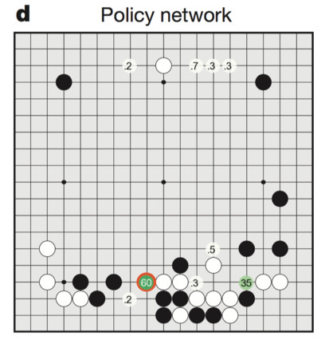

Deep Reinforcement Learning
AlphaGo
Solving the game of Go

Go is an ancient two-opponents board game, where each player successively places stones on a 19x19 grid.
When a stone is surrounded by four opponents, it dies. The goal is to ensure strategical position in order to cover the biggest territory.
There are around 10^{170} possible states and 250 actions available at each turn (10^{761} possible games), making it a much harder game than chess for a computer (35 possible actions, 10^{120} possible games).
A game lasts 150 moves on average (80 in chess).
Up until 2015 and AlphaGo, Go AIs could not compete with world-class experts, and people usually considered AI would need at least another 20 years to solve it.
Minimax and Alpha-Beta

Minimax algorithm expand the whole game tree, simulating the moves of the MAX (you) and MIN (your opponent) players.
The final outcome (win or lose) is assigned to the leaves.
It allows to solve zero sum games: what MAX wins is lost by MIN, and vice-versa. We suppose MIN plays optimally (i.e. in his own interest).
Limits of tree-based approaches
Alpha-Beta methods work well for simple problems where the complete game tree can be manipulated:
- Tic-Tac-Toe has only a couple of possible states and actions (3^9 = 19000 states).

It also works when precise heuristics can be derived in a reasonable time.
This is the principle of IBM DeepBlue which was the first Chess AI to beat a world champion (Garry Kasparov) in 1995.
Carefully engineered heuristics (with the help of chess masters) allowed DeepBlue to search 6 moves away what is the best situation it can arrive in.
But it does not work in Go because its branching factor (250 actions possible from each state) is too huge: the tree explodes very soon.
- 250^{6} \approx 10^{15}, so even if your processor evaluates 1 billion nodes per second, it would need 11 days to evaluate a single position 6 moves away…
Game tree of Go

AlphaGo

- The policy network learns the probability of selecting different moves.

- The value network learns to predict the value of any possible state under the learned policy.
Monte Carlo Tree Search

The final AlphaGo player uses Monte Carlo Tree Search (MCTS), which is an incremental tree search (depth-limited), biased by the Q-value of known transitions.
The game tree is traversed depth-first from the current state, but the order of the visits depends on the value of the transition.
MCTS was previously the standard approach for Go AIs, but based on expert moves only, not deep networks.
Monte Carlo Tree Search
The four phases are then repeated as long as possible (time is limited in Go), to expand the game tree as efficiently as possible.
The game tree is repeatedly sampled and grows after each sample.
When the time is up, the greedy action (highest Q-value) in the initial state is chosen and played.
For the next move, the tree is reset and expanded again (MPC replanning).
AlphaZero
- AlphaZero totally skips the supervised learning part: the RL policy network starts self-play from scratch!

The RL policy network uses MCTS to select moves, not a softmax-like selection as in AlphaGo.
The policy and value networks are merged into a two-headed monster: the convolutional residual layers are shared to predict both:
- The policy \pi_\theta(s), which is only used to guide MCTS (prior of UCB).
a_t = \text{argmax}_a \, Q(s, a) + K \cdot \frac{\pi_\theta(s, a)}{1 + N(s, a)}
- The state value V_\varphi(s) for the value of the leaves (no fast rollout).
AlphaZero
- The loss function used to train the network is a compound loss:
\mathcal{L}(\theta) = (R − V_\varphi(s))^2 - \pi_\text{MCTS}(s) \, \log \pi_\theta(s) + c ||\theta||^2
The policy head \pi_\theta(s) learns to mimic the actions selected by MCTS by minimizing the cross-entropy (or KL).
The value network V_\varphi(s) learns to predict the return by minimizing the mse.
AlphaZero
Initialize neural network.
Play self-play games, using 1,600 MCTS simulations per move (which takes about 0.4 seconds).
Sample 2,048 positions from the most recent 500,000 games, along with whether the game was won or lost.
Train the neural network, using both A) the move evaluations produced by the MCTS lookahead search and B) whether the current player won or lost.
Finally, every 1,000 iterations of steps 3-4, evaluate the current neural network against the previous best version; if it wins at least 55% of the games, begin using it to generate self-play games instead of the prior version.
Repeat steps 3-4 700,000 times, while the self-play games are continuously being played .
AlphaZero
- By using a single network instead of four and learning faster, AlphaZero also greatly reduces the energy consumption.

AlphaZero

The same algorithm can also play Chess and Shogi!
The network weights are reset for each game, but it uses the same architecture and hyperparameters.
After only 8 hours of training, AlphaZero beats Stockfish with 28-72-00, the best Chess AI at the time, which itself beats any human.
This proves the algorithm is generic and can be applied to any board game.
MuZero
MuZero is the latest extension of AlphaZero (but see EfficientZero https://arxiv.org/abs/2111.00210).
Instead of relying on a perfect simulator for the MCTS, it learns the dynamics model instead.
s_{t+1}, r_{t+1} = f(s_t, a_t)

MuZero
- Finally, complete games sampled from the ERM are used to learn simultaneously the three networks f, g and h:

MuZero
MuZero beats AlphaZero on Chess, Go and Shogi, but also R2D2 on Atari games.
The representation network h allows to encode the Atari frames in a compressed manner that allows planning over raw images.